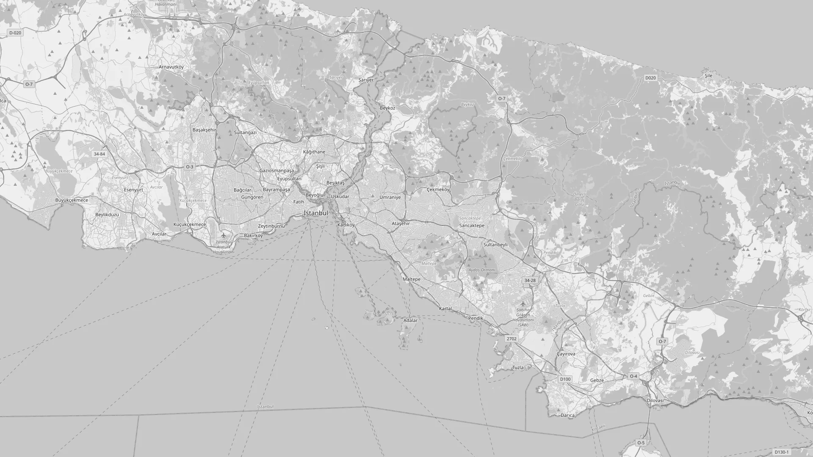

Alternatif Satış Kanalı · Yeni proje tanıtımı
03 · ÇÖZÜM
Prototip ekranları · Örnek: Mehmet Bey ve SPY Onur Kaya
MÜŞTERİ · TELEFON
SPY · TABLET
04 · YOL HARİTASI
Tanımlama
Hazırlık
Pilot bölge denemesi
Yaygınlaştırma
Talep sayısı
Yanıt süresi
Gerçekleşen görüşme

© OpenStreetMap katkıda bulunanlar
05 · HEDEFLENEN DÜZEN
Yan kazanç: her talebin ön bilgisi = ek veri
05 · HEDEFLENEN DÜZEN
Saha çalışması
Dağılım, gelen talebe göre ayarlanır
Tasarruf Yanımda
Alternatif Satış Kanalı